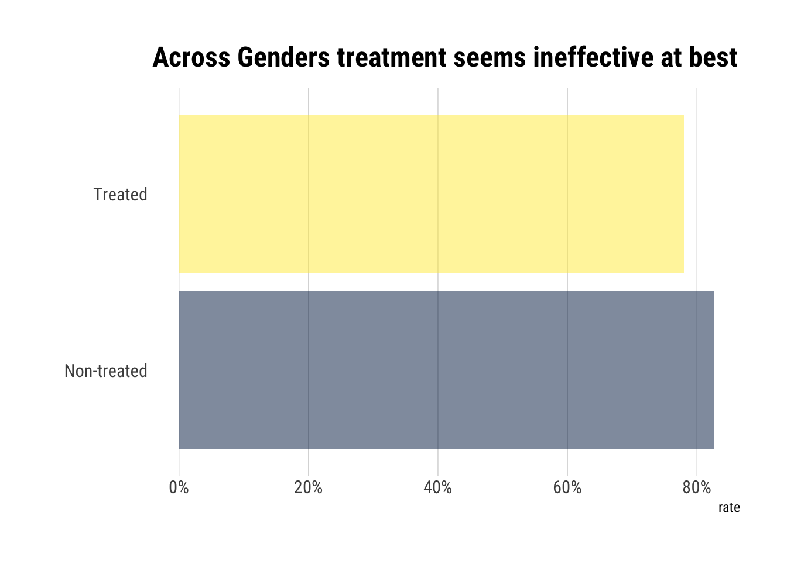

In the last post we saw how two causal models can yield the same testable implications and thus cannot be distinguished from data alone. That is, we cannot gain causal understanding from data alone. Does that mean that we cannot ever gain causal understanding? Far from it; it just means that we must have a causal model.
Thus, causal effects cannot be estimated from the data itself without a causal story. In this blogpost, I’ll show how exactly the combination between causal models and observational data can lead us into estimating causal effects. In short, causal effects can be estimated by leveraging the invariant information that the pre-intervention distribution can provide. Doing so, we connect pre-intervention probabilities with the post-intervention probabilities that define the causal effect.
Defining the causal effect with the do-operator
Fundamentally, we cannot gain causal understanding with data because the data we see could have been generated by many a causal models. That is, the associations we see, \(P(Y | X)\), can be the result of many interactions; some of them causal and some purely observational. We can say that any statistically meaningful association is the result of a causal relationship somewhere in the system, but not necessarily of the causal effect of interest, \(X \rightarrow Y\).
To disentangle this confusion, then, let’s define a causal effect. Following Pearl, we will take an interventionist position and say that a variable \(X\) has a causal influence on \(Y\) if intervening to change \(X\) leads to changes in \(Y\). Intervening on \(X\) means lifting \(X\) from whatever mechanism previously defined its value and now set it to a particular value \(X=x\) in an exogenous way.
Thus, the causal effect is defined as a function from the values \(X\) can take to the space of probability distributions on \(Y\). For example, if \(X := x\), then we arrive at the interventional distribution \(P(Y| \text{do}(x))\): the population distribution of \(Y\) if everyone in the population had their \(X\) value fixed at \(x\).
The \(\text{do}\) operator defines the exogenous process through which we have intervened to set the value of \(X := x\). Finally, we derive \(P(Y| \text{do}(x))\) for every possible \(x\) and test whether the distribution changes as we change the value \(X\) takes.
Therefore, to study the causal effect of \(X\) is to change the system by determining the value of \(X\) outside of it and seeing how the effects cascade thorough the system. However, before we change a system we must define it. How to represent the system? With a Causal Graph!
Causal Graphs
The question, then, becomes: how can we simulate the effects of intervening in the causal system?. First, however, we must define the system in question.
Let each node represent one of the variables of interest. We will draw an arrow from \(X\) to \(Y\) if there is a direct causal effect from \(X\) to \(Y\) for at least one individual. Alternatively, the lack of an arrow means that there’s no causal effect for any individual in the population. We will assume that the system is adequately written if all common causes of any pair of variables on the graph are themselves on the graph. Finally, we’ll say that a variable is always a cause of its descendants.
We will link Causal Graphs to Bayesian graphs by assuming that each variable, conditional on its parents, is independent of any variable for which it is not a cause (i.e., all its predecessors). In turn, this will imply that the Graph defines the same recursive decomposition of the joint distribution as a Bayesian Graph:
\[ P\left(x_{1}, \ldots, x_{n}\right)=\prod_{j} P\left(x_{j} \mid pa_j\right) \]
Thereby, we can derive, using the d-separation criterion, testable implications of our causal models.
To make things more concrete, let’s work with the following fork: let’s say that a new treatment is developed to reduce cholesterol. However, women take the treatment more/less than men and have higher/lower levels of cholesterol. How to compute the causal effect of the treatment on cholesterol?
Interventions: Eliminating incoming arrows
Intervening on \(X\) such that \(\text{do(X = 1)}\) amounts to curtailing the previous mechanism that defined \(X\). In Graph lingo: eliminate the incoming arrows into \(X\): gender no longer cause \(X\). Therefore, we eliminate the arrow from Gender into treatment. Thus, an intervention is equivalent to eliminating arrows in a Causal Graph. Let’s label this new graph \(G_m\)
Invariant probabilities under intervention
The mutilated graph is still a Causal Graph. Thus, it implies a particular decomposition of the joint probability (\(P_m\)) of it’s own. With respect to this post-intervention distribution, we can define the causal effect: \(P(Y=y|\text{do}(X=x)) := P_m (Y=y|X=x)\). However, this new post-intervention distribution \(P_m\) is not totally disconnected from the pre-intervention distribution (\(P\)) that we can study with observational data.
There are two invariant qualities that are the same in the pre-intervention and post-intervention distribution:
Our intervention is atomic: there are no side effects that alter the way non-descendants of \(X\) are determined. Thus, \(P_m(Z=z| X=x) = P(Z=z)\).
The conditional probability \(Y\) is invariant, because the mechanism by which Y responds to \(X\) and \(Z\) remains the same, regardless of whether \(X\) changes spontaneously or by deliberate manipulation. Thus; \(P_m(Y| X=x, Z = z) = P(Y|X=x, Z=z)\).
Connecting pre-intervention probabilities with post-treament
Therefore, using probability laws and our independence assumption between \(X\) and \(Z\) in the mutilated graph, we define the causal effect in terms of post-intervention distribution thus:
\[ \begin{array}{l} P(Y = y | do(X=x)) := P_m (Y=y|X=x) \\ =\sum_{z} P_{m}(Y=y \mid X=x, Z=z) P_{m}(Z=z \mid X=x) \\ =\sum_{z} P_{m}(Y=y \mid X=x, Z=z) P_{m}(Z=z) \end{array} \] Luckily, all the terms invariant: both terms can be connected to the original pre-intervention probability distribution:
\[ P(Y=y \mid d o(X=x))=\sum_{z} P(Y=y \mid X=x, Z=z) P(Z=z) \] Therefore, we arrive at a definition of the causal effect in terms of the pre-treatment distribution. Thus, we can estimate the causal effect from observational studies without the need of actually carrying out the intervention.
The Adjustment Formula
More generally, we define the causal effect in terms of pre-intervention probability thus. Given a graph \(G\) in which a set of variables \(pa\) are designated as the parents of \(X\), the causal effect of \(X\) on \(Y\) is given by:
\[ P(Y=y|\text{do}(X=x)) = \sum_{z} P(Y=y | X=x, P A=z) P(pa=z) \] Therefore, we can conclude why it is necessary to have a causal story to be able to estimate the causal effect: to identify the parents of \(X\) and adjust for them: first condition \(P(Y=y| X =x)\) on \(PA\) and then average the result, weighted the prior probability of \(pa = z\).
An example
Let’s follow our thought experiment with our previous graph. In the experiment, we observe both men and women who decide whether they take the drug or not. The results are the following:
| Recovered | N | Treatment | Gender |
|---|---|---|---|
| 81 | 87 | 1 | Male |
| 234 | 270 | 0 | Male |
| 192 | 263 | 1 | Female |
| 55 | 80 | 0 | Female |
When we study the data across genders, we find out that the patients who didn’t take the drug had a higher rate of recovery:

However, once we separate the data by gender, the opposite picture arises:
We have a case of Simpson’s Paradox! Let’s use the causal knowledge embedded in our graph to estimate the true causal effect of the treatment. Given that Gender is the only parent of Treatment, we will adjust for it:
[ P(Y=1 d o(X=1))=+=0.832 ] while, similarly, [ P(Y=1 d o(X=0))=+=0.7818 ] Thus, comparing the effect of drug-taking ( (X=1) ) to the effect of nontaking ( (X=0), ) we obtain [ A C E=P(Y=1 d o(X=1))-P(Y=1 d o(X=0))=0.832-0.7818=0.0502 ]
However, if Gender had not been a parent of Treatment (i.e., if both Genders decide to take the treatment equally), our Causal effect would be different because we would adjust for Gender in the first place.
Identifiable
We’ve estimated causal effects with a pretty simple strategy: adjust for the parents of the exposure and average those effects weighted by the probability of the parents.
Therefore, according to our strategy, the causal effect will be identifiable whenever both \(X, Y\) and the parents of \(X\), \(pa\) are measured. Whenever measurements for some of them are missing, we must use other techniques to estimate the causal effect.
Addendum: RCT
Randomized Control Trials are sometimes referred to as the gold standard in causal inference. However, in our framework, they are nothing more than a different graph surgery. Whereas before we cut all the incoming arrows into treatment, now we replace all the incoming arrows with only with one arrow that signifies the randomization of the treatment:
Therefore, now we must simply adjust by randomization to estimate the causal effect of treatment. Does that mean that they are not useful? No, they will always have the upper hand when we are uncertain about our causal model. If there is another parent of treatment that we are not accounting for, Randomization will offer a clean solution.